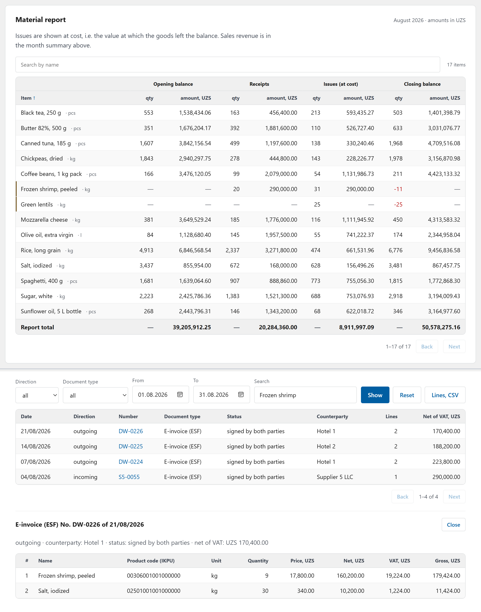
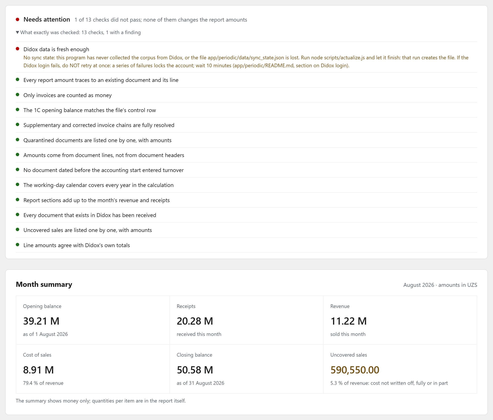
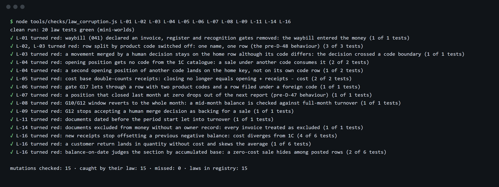

E-Invoice Stock Ledger
A stock ledger that rebuilds a wholesaler's item-level inventory from its e-invoices and reconciles it with the accounting system.
since Jul 2026, active · 250 commits · JavaScript (Node.js) · Python · code: private
The problem
A food wholesaler in Uzbekistan moved its 1C accounting to a periodic scheme: 1C keeps stock as a single money total, with no quantities per item. The business still needs a monthly material report and a stock figure on any date, per item. It also needs a way to raise outgoing invoices and waybills without retyping every sales document.
All purchases and sales already pass through the national e-invoicing platform (Didox, ESF invoices), so the item-level truth exists but is scattered. Invoices get corrected or rejected after the fact. Unit and package codes on them are unreliable. Cutting and repacking between purchase and sale never appear in any document. An honest ledger has to live with all of that without inventing data.
What it does
- Rebuilds stock on any date from the e-invoice stream, starting from the 1C opening balance: opening + receipts − issues, each movement dated by the tax-code recognition rule.
- Produces the monthly material report and a stock-on-date statement, on screen and as Excel print forms. Reports for real periods were produced from it and handed to the client.
- Traces every amount to a source invoice line. The opening balance must match the 1C trial balance to the smallest currency unit, or the build stops.
- Makes gaps visible: rejected, duplicate, corrected, unknown-type and missing documents go into named sections and gates instead of disappearing.
- Routes judgment to people. Operators confirm which spellings are the same product and which unit a line is in, working through shared queues with claim and conflict handling. The machine, sometimes helped by an LLM, only proposes.
- A second tool (the invoice desk) turns sales waybills into outgoing invoices and waybills in the platform's official upload templates, plus a feed for a 1C loader. The client's staff use it daily.
How it works
flowchart LR
subgraph Sources
D[("E-invoice platform API")]
O["1C opening balance<br/>trial-balance export"]
X["Sales waybills .xls"]
end
subgraph Ledger["Stock ledger :3400"]
S["Sync + frozen corpus"] --> R["Rules & chains"]
R --> G["Register"]
J["Human decision journal"] --> G
O --> G
G --> V["Gates G1-G17"]
G --> UI["Web UI + Excel forms"]
end
subgraph Desk["Invoice desk :3300"]
X --> M["Match to 1C cards"]
M --> T["Invoice / waybill templates"]
M --> F["1C loader feed"]
end
D --> S
A["Signature login helper"] --> D
flowchart TD
doc["Invoice document"] --> gate{"Invoice type?"}
gate -- "waybill / other" --> out["Outside money<br/>(listed)"]
gate -- "unknown" --> q["Quarantine by name"]
gate -- "invoice" --> st{"Status & correction chain"}
st -- "supplement" --> delta["Add delta to original"]
st -- "correction" --> repl["Replace, keep parent's date"]
st -- "rejected / before start" --> excl["Excluded section"]
st -- "valid" --> date["Recognition date"]
delta --> date
repl --> date
date --> id{"Product identity & unit<br/>decided by a person?"}
id -- "no" --> todo["Needs decision"]
id -- "yes" --> row["Report row = name + product code"]
The ledger is a pure function of the current e-invoice snapshot and is recomputed in full every time. Documents change status retroactively, so the data never contains a closed month.
Engineering notes
- Money comes only from invoice lines. A document-type gate runs before any status logic. It is deliberately placed in two modules. Unknown types or statuses are quarantined by name, never counted as zero.
- Correction chains follow the tax rules. A supplementary invoice is a delta; a corrected invoice is a full replacement recognised at its parent's date. Six chain invariants include the legal time limits for corrections, used as forward gates.
- No closed months, so the cache has to be exact. The register's cache key covers every input, including a content fingerprint of the human decision journal. It was introduced after a measured cache collision returned the wrong result.
- The machine proposes, a person records. Product identity and units cannot be derived from the documents. Decisions live in an append-only journal, each with an author and a timestamp. One product name under two classification codes stays two rows.
- The cost method matches the client's 1C, including negative stock. The rule was derived from the working 1C's own postings by agents that could not see this code. It was then compared with three open-source ERPs on the same scenarios.
- Production runs only from a commit. It lives in a separate copy, reports the running commit in its health endpoint, and restarts during a quiet window.
- No dependencies. The ledger uses only the Node standard library, including its own xlsx reader and writer, so it runs on any machine without Excel.
How it is verified
- About 370 test scenarios for the ledger and 52 regressions for the invoice desk, run against an isolated server process.
- A law registry: each accounting rule (15 today) needs a test on the final report row with hand-computed numbers, plus a deliberate code mutation that must turn that test red.
- Property tests on 30 seeded random worlds for money conservation.
- 17 completeness gates that recompute the report independently, and 12 data-quality checks.
- One acceptance command. Editor hooks refuse to end a work session that touched money-related code without a green run.
- Independent multi-agent audits with a skeptic round, including a 13-axis audit (216 findings, 3 critical, all closed).
Stack
Node.js (stdlib only), vanilla HTML/JS · Python + Playwright + pywinauto (signature login) · PowerShell (deploy, Excel COM) · 1C exports · Didox API · optional OpenAI-compatible LLM · built with Claude Code (hooks, subagents, skills) over 432 agent sessions.
Screenshots
The real code running on synthetic data. No client data appears anywhere.

The real application running on fully synthetic data: the monthly material report for a fictional wholesaler (opening, receipts, issues at cost, closing), and below it the click-through to the e-invoice line behind the oversold shrimp row; labels translated from Russian.

The report's completeness gates on synthetic data: 12 of 13 checks pass, and one is honestly red because this demo copy was never synced with the e-invoicing platform; the month summary sits below; labels translated from Russian.

Mutation check of the accounting-law registry: each rule's code is deliberately broken and that law's own test must turn red, and 15 of 15 mutations were caught; output translated from Russian.
Access
The code is private because it runs a live business. To request a walkthrough or read access, open an issue in this repository or email eazamat360@gmail.com.